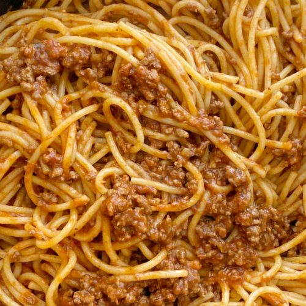

Homemade Spaghetti Recipe

Description
This is my own simple homemade spaghetti recipe. In its simplicity it is
one of my favorite dishes being that it is just ground beef, noodles and
your red sauce of choice.
Ingredients
- Ground Beef
- Spaghetti Noodle
- Red Sauce (Classico)
- Tomato Puree
- Diced Tomatoes In Juice
- Water
- Green Bell Peppers
- Cooked Italian Sausage
- Onion
Steps
- Cook ground beef in large nonstick skillet over medium-high heat, for 7
to 8 minutes, breaking into small chunks and stirring constantly until
browned.
- At the same time cook pasta in boiling water until pasta is tender.
- Mix in red sauce with cooked beef and bring sauce to a simmer.
- In large pot mix everything togther and serve.